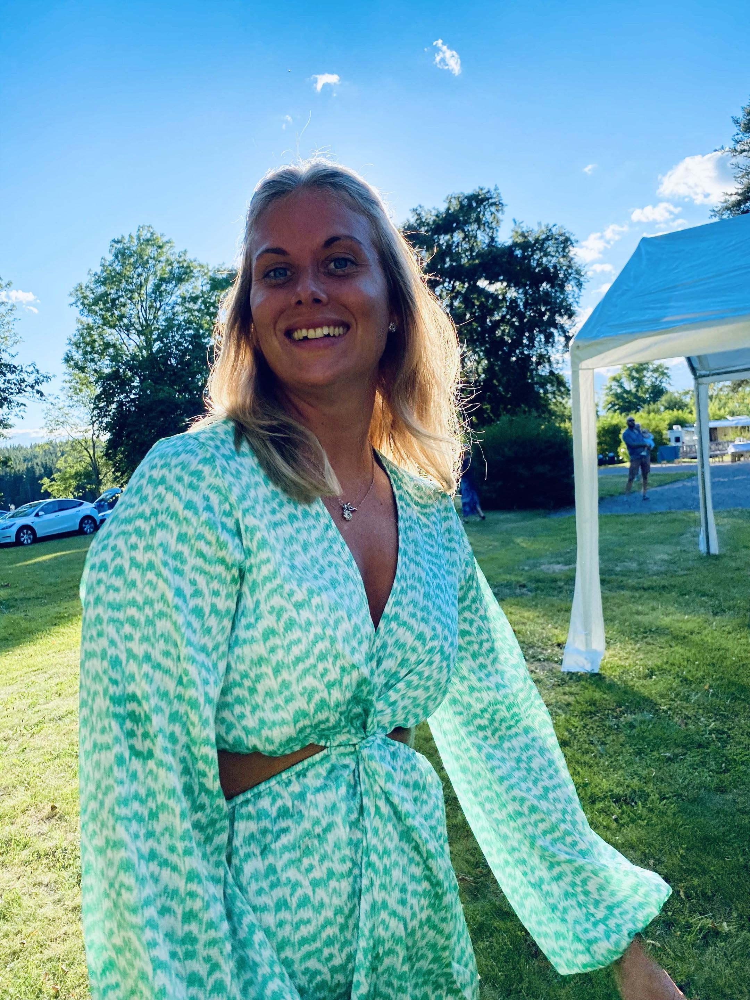

Portfolio
Om mig
Mitt namn är Felicia Johansson Martell, jag är 31 år gammal och studerar just nu till webbutvecklare. Jag är en glad, framåt person som tycker om att lära mig nya saker. Jag arbetar gärna ensam men kan också tycka det är roligt att arbeta med ett projekt i grupp där man kan bolla tankar och idéer.
Tidigare arbetade jag på Scania som teamleader vilket jag tyckte var otroligt roligt, men efter att ha träffat min dåvarande pojkvän, idag make så bestämde jag mig för att flytta hem till Växjö igen. Därefter tog jag beslutet att börja studera till lönekonsult, jag har trivts väldigt bra med att vara lönekonsult men kände att problemlösningen som jag alltid älskat inte riktigt fanns där, jag var också mer intresserad av vad som skedde bakom löneprogrammet än framför och bestämde mig då för att studera webbutvecklare.
Fyra personliga fakta om mig
- Jag har två barn, Hailey 2.5 år och Lucas 7 månader
- Jag bor i ett hus tillsammans med min make som vi renoverat sen vi köpte det för 3 år sedan.
- Vid egentid så lyssnar jag gärna på podd och fixar i huset, så som gräsklippning och städning.
- Jag är en planerare, jag älskar att planera och ha allting fixat innan något sker. Så en spontan middag hos mig? Lika osannolikt som att träden inte släpper sina löv på hösten.
Arbetslivserfarenhet
-
Lönekonsult, Region Kronoberg
Arbetar idag som lönekonsult på Region Kronoberg
-
Lönekonsult, Crowe Tönnervik
Arbetade som lönekonsult på Crowe Tönnervik
-
Lönekonsult, Region Halland
Arbetade som lönekonsult på Region Halland innan vi flyttade tillbaka till Småland
-
Teamleader, Scania
Arbetade först som vanlig arbetare och sedan som teamleader
Utbildning
-
Webbutvecklare.net, Campus Värnamo
Studerar till webbutvecklare på Campus Värnamo
-
Lönekonsult med systeminriktning, Montico
Studerade till lönekonsult med systeminriktning
-
Wasaskolan Tingsryd
Studerade ekonomi på gymnasiet
Språk
-
Svenska
Modersmål
-
Engelska
Mycket goda kunskaper i både tal och skrift
Nästa steg
Jag söker LIA-plats från och med hösten 2027. Hör gärna av dig.
